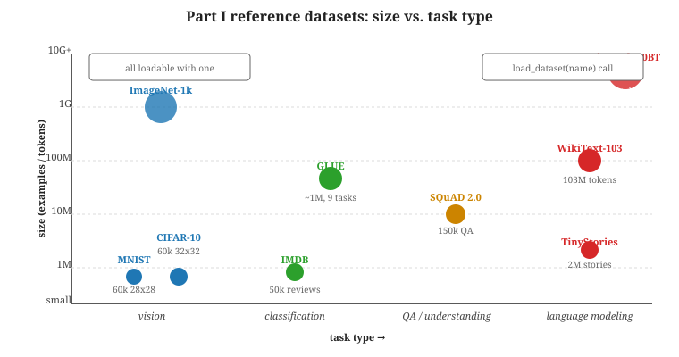

The dataset catalogue for Part I is short on purpose. To learn a concept, you want a corpus small enough to load in seconds, well-understood enough that your bug is in your code and not in the data, and large enough that a learning curve is visible. The classic teaching datasets, MNIST, CIFAR-10, SQuAD, GLUE, and a tiny natural-language corpus, satisfy all three criteria. Resist the urge to start with Common Crawl; you will spend more time fighting the loader than studying the model.
The benchmarks listed below also serve a second purpose: they are the reference points that every paper in Parts II through XII compares against. When a 2026 paper claims state-of-the-art on GLUE, it means something specific because GLUE has been frozen since 2018. Knowing the benchmarks at the level of "what is in the test set" lets you read research with calibrated skepticism.

load_dataset() call.5.4.1 Vision datasets
- MNIST: 60k training + 10k test images of handwritten digits, 28x28 grayscale. The "hello world" of deep learning. Available via
torchvision.datasets.MNIST. - Fashion-MNIST: same shape as MNIST, 10 clothing categories instead of digits. Use it when you want MNIST's convenience but worry MNIST is too easy.
- CIFAR-10 / CIFAR-100: 60k 32x32 colour images across 10 (or 100) categories. The reference for small-scale convolutional and transformer-vision work. Available via
torchvision.datasets.CIFAR10. - ImageNet-1k: 1.2M images across 1,000 categories. Too large for Part I but you will need to know what "ImageNet pretraining" means by Chapter 12.
5.4.2 Text datasets
- SQuAD 1.1 / 2.0: extractive question answering, 100k+ question-answer pairs against Wikipedia passages. SQuAD 2.0 adds unanswerable questions. The reference for "given a passage, find the span that answers a question" tasks.
- GLUE and SuperGLUE: nine and ten language-understanding tasks respectively, covering paraphrase, entailment, sentiment, and coreference. GLUE is saturated as of 2020; SuperGLUE remains harder but is mostly saturated too. Both are still the canonical teaching benchmarks for transformer fine-tuning.
- WikiText-103: 103M tokens of Wikipedia for language-modelling exercises. Small enough to overfit on a 24 GB GPU, large enough that "your model is not overfitting" is meaningful.
- IMDB Reviews: 50k movie reviews labelled positive or negative; the canonical sentiment-classification dataset.
- FineWeb-10BT (the 10 billion token sample): a curated Common Crawl extract for pretraining experiments, documented in the FineWeb paper (Penedo et al., 2024, arXiv:2406.17557). Not used in Part I exercises, but worth knowing exists.
- TinyStories (Eldan and Li, 2023, arXiv:2305.07759): the canonical "smallest corpus where a tiny model writes coherent English" dataset. Pair with TinyStories-1M / 33M models for the cheapest possible end-to-end pretraining demo.
- Cosmopedia v2 (Hugging Face, 2025): a 25B-token synthetic pretraining corpus, the demonstration corpus behind SmolLM2.
5.4.3 Comparing the teaching datasets
| Dataset | Size | Task | Why it is in Part I |
|---|---|---|---|
| MNIST | 60k images | 10-class image classification | Smallest non-trivial dataset; classic "first run" |
| CIFAR-10 | 50k images | 10-class image classification | First "real" deep-learning benchmark |
| SQuAD 2.0 | ~150k QA pairs | Extractive QA | Reference for span-prediction transformers |
| GLUE | ~1M examples across 9 tasks | NL understanding suite | Standard fine-tuning benchmark |
| WikiText-103 | ~103M tokens | Causal LM | Compact pretraining-like corpus |
5.4.4 Loading them with one line
The datasets library handles all of these:
from datasets import load_dataset
glue_sst2 = load_dataset("glue", "sst2")
squad = load_dataset("rajpurkar/squad_v2")
wikitext = load_dataset("Salesforce/wikitext", "wikitext-103-raw-v1")For the vision datasets, torchvision.datasets is the right loader: datasets.MNIST(root, train=True, download=True) handles cache and download in one call. The TensorFlow Datasets catalogue mirrors most of the same corpora and is a useful backup when a Hugging Face mirror is rate-limited.
Modern pretrained models have seen the GLUE test set indirectly through web-scale pretraining. A "new SOTA (state-of-the-art) on GLUE" claim in 2026 should be read as "test-set contamination is the most likely explanation" until proven otherwise. The FineWeb-Edu and Dolma data sheets document benchmark filtering, but no commercial frontier model publishes its pretraining corpus, so contamination has to be assumed by default.
The fastest way to convince yourself a model is learning when it is not is to leak the test set into training through a sloppy split. The Hugging Face datasets library exposes train_test_split with a stable seed argument; use it. For SQuAD, GLUE, and the vision datasets, the official splits are pre-defined and you should never rebuild them.
5.4.5 What "good enough" looks like
For each Part I exercise there is a target metric that signals you have a working pipeline: ~99% on MNIST, ~92% on CIFAR-10 with a small ResNet, ~80% on SST-2 with BERT-base, ~85 F1 on SQuAD 2.0 with BERT-base. If you are far below those, the bug is rarely the model and almost always either the optimizer (learning rate, weight decay) or the data pipeline (wrong tokenization, mis-labelled split).
Hitting 99% on MNIST tells you the training loop ran. It tells you essentially nothing about how the model would behave on text, on a different image distribution, on adversarial inputs, or at scale. Treat the target metrics in this section as pass / fail signals for your pipeline, not as model-quality claims. The 2025 contamination-resistant suites (BIG-bench Lite and BIG-bench Extra Hard) are the modern equivalent for 2026 LLM evaluation, but you only need them once you reach Part VIII; the cross-link is Section 10.9.
What's Next?
In the next section, Section 5.5: Models, we build on the material covered here.